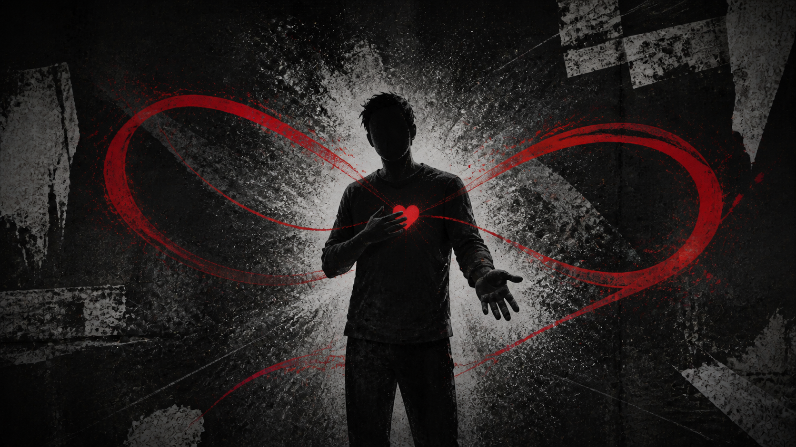

Version 05Connection
The Bonded Heart
Love, loyalty, memory, connection.

Love, loyalty, memory, connection.
The voice
I have loved hard enough to lose my own outline. Never again. I can hold you close without letting go of me.
The signal
Why this Version matters
This Version names love, loyalty, memory, and the risk of losing his own outline.
It protects both connection and the self inside that connection.
It can hold someone close without letting go of itself.
Connection can become disappearance when boundaries vanish.
Love that allows both people to stay whole.
Hold close. Stay whole.